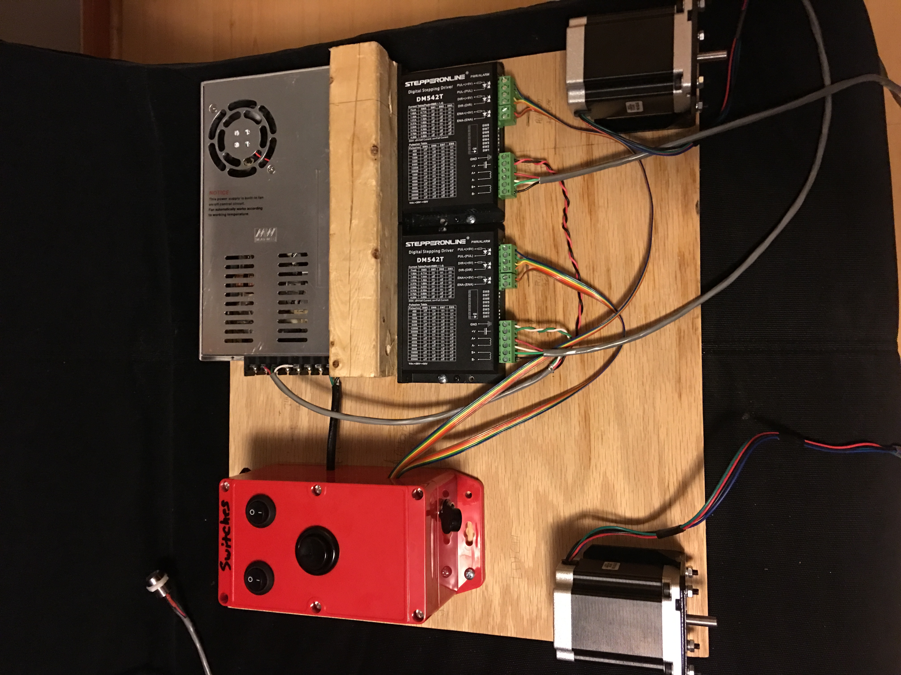

Stretching Jigs - Low and High Power
This was another project I created while working for a research position at school. The photo gallery shows off a few versions of the stretching apparatuses I created to satisfy the needs of some researchers. While I wasn't very involved in the applications of what I created, I did learn a lot as this was one of my first projects for the research position.This project was pretty simple. I was tasked with creating a jig that can stretch samples via counter-rotating shafts. I accomplished this via two stepper motors with corresponding mounts, the associated stepper drivers, and an Arduino microcontroller to tie everything together. As I said, there are a few versions of the device, mostly because the applications required more and more stretching power. To accomodate that requirement, I utilized higher power drivers and motors. To control the motors, I created an easy to use interface within the Arduino program to allow for process variables to be changed quickly.
Photo Gallery


